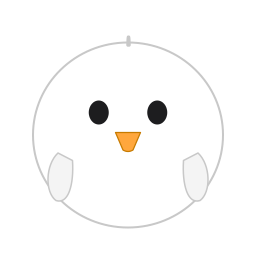

A tiny critter that lives on your Mac desktop.
Seven visual styles · Synthesised chirps · Multi-monitor · Light on resources.
Free · macOS 13+ · ~3 MB · CPU 0% when idle
Each style has its own spritesheet — switch live from the menu bar.
Cel-shaded kawaii. Default style.
Photo-real baby chick.
3D plastic-sticker emoji vibe.
Built from blocky bricks.
Stitched fabric patch.
Brushstroke portrait.
Late-90s 3D nostalgia.
The chick idles, walks, and bounces around all your displays — including across multi-monitor setups.
Drop a draggable coop onto any space. Click it to spawn coloured chick friends. They wander home periodically.
22 chirp variants generated live from real-world bioacoustic data — not pre-recorded samples. Each click sounds slightly different.
Click the coop to summon chicks in pink, mint, lavender, blue, red, white, brown, and the original yellow.
Click on a critter to make it peep. Move the cursor near it and watch it dart away in a panic.
Idle chicks consume no CPU. Active animation is around 1–3 % on a single core. Stays out of your way.
Chick.zip and drag Chick.app into ~/Applications.
Or build from source:
git clone && ./build.sh && open Chick.app